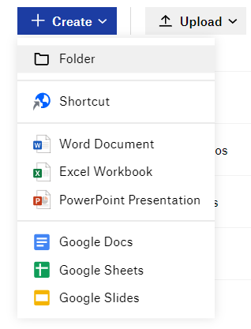
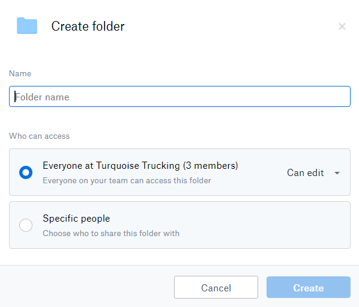
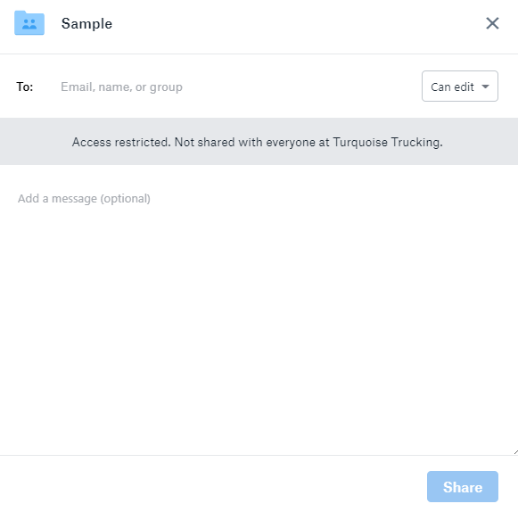
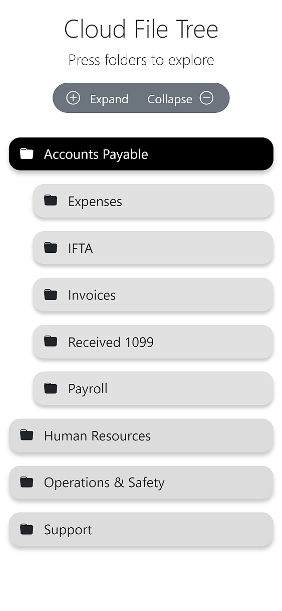
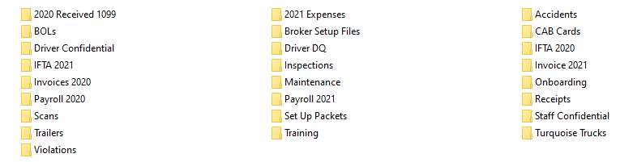
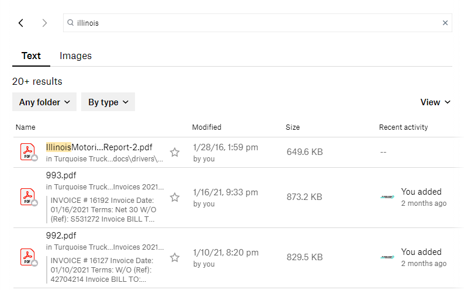
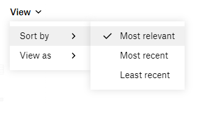
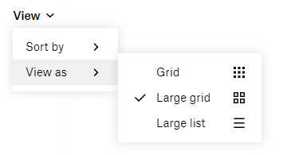

Written 2021-03-10 by John Earl Hardesty
Reading time about 15 minutes and 20 seconds.
Listen to this paper out loud (excluding tables and long lists).
As part of our paperless office initiative, we have chosen Dropbox Business as our cloud solution.
There are 5 Terabytes of storage shared across all members. If we assume each PDF averages one megabyte, and we decide to only store documents, Dropbox can store 5 million PDFs. Of course, documents vary by size and we can store more than just documents on the cloud.
All documents should be stored in Dropbox, including documents already stored in other cloud solutions.
This document covers how members and groups are managed, where files are stored, backup options, searching, and creating new documents.
This section covers how new folders are made and who can access them. Also, proposed member and group schemes. By default, everyone can edit new folders.
Visit Dropbox and navigate to where you want to create a folder. Then press + Create and Folder.

The folder permission window will open.

Name the folder following rules in our style guide. Everyone in an organization can edit new folders unless specified. Options are:
Can edit
Can view
Let's take a step back. Cloud storage should replace traditional paper filing. When we determine access to a digital file we should consider it the same way as our real-life filing system. Are files kept in a filing cabinet? If so, is it locked? These questions can help determine who has access to digital files.
The whole point of having multiple members is to restrict access. Let's choose specific people.

You may choose people by their email, name, or group. Groups offer wider control and are easier to maintain over time. Chances are, you will always have an accounting department and a dispatch team right?
What if an employee leaves? Removing them from a group in the admin panel is easy. What about all the folders in the organization? If folders are given access based on members you would have to update every single folder.
People, users, members, licenses, are all the same thing in Dropbox. So, if we intend to keep only 3 licenses (the default) then a person would be someone that knows the username and password to a Dropbox account.
Currently, there are 3 members:
Contact was the original Dropbox account member. While Dispatch Team and Matt Keel were added after upgrading to Dropbox Business. These members can be changed at any time.
To cover all staff members we would need to purchase more licenses.
Each additional license will cost $150/year or $12.50/month when paid annually.
| Licenses / Users | Total per Year |
|---|---|
| 3 | $450 |
| 4 | $600 |
| 5 | $750 |
| 6 | $900 |
| 7 | $1050 |
These totals do not include sales tax.
From a security perspective, no one should share access. Every user should have their own user account. But, that would be very expensive.
Clearly, we need more than 3 licenses but not over 7. Let's consider groups.
With only three members I've created four groups
Current members that can edit areas
| Members | Accounts Payable | Human Resources | Support | Operations |
|---|---|---|---|---|
| Contact | ✏️ | ✏️ | ✏️ | ✏️ |
| Dispatch | ✏️ | |||
| Matt | ✏️ | ✏️ |
Accounts Payable
Human Resources
Support
Operations
There are only so many ways to manage four groups with only 3 members.
Let's consider real-world groups. Rashad and Bow are founders of Turquoise and should have edit access to everything. Their group is immutable and should not be shared with anyone but them. Everyone should have access to operations. Financial files may not need to be viewed by everyone but they should only be edited by accounting staff. Driver onboarding, DQ and confidential, are HR related files. Support files should be viewable to everyone.
If we had a additional license we can expand on these groups:
Founders (Rashad and Bow)
Accounts Payable (Rashad and Rachel)
Operations & Safety (Bow, EJ, Rashad, Matt, Rachel)
Human Resources (Matt)
Proposed groups that can ✏️ edit
| Groups | Accounts Payable | Human Resources | Operations | (Anything) |
|---|---|---|---|---|
| Founders | ✏️ | ✏️ | ✏️ | ✏️ |
| Accounts Payable | ✏️ | 👁️ | 👁️ | 👁️ |
| Human Resources | 👁️ | ✏️ | 👁️ | 👁️ |
| Operations | 👁️ | 👁️ | ✏️ | 👁️ |
Because we are a small office everyone needs view access to everything. We don't lock particular file cabinets. Our cloud solution should reflect our real world organization scheme.
What needs to be changed?
Contact member renamed to Founders
APR Team @ Turquoise added as a license
Operations & Safety
Matt is the sole HR person
In this proposal we need one additional license.
Positives:
Negatives:
Groups and members seem the same? Well, in effect they are because we have far fewer licenses to employees. Groups, as a Dropbox feature, may not even need to be used.
There are three ways to organize Dropbox; short and deep, long and shallow, or a hybrid of both.
There is a shorter list of files at the top, but their structure is deep like the roots of a tree. This is a bucket approach, putting related pieces of information into similar buckets.
Below we organize top-level folders based on our live Dropbox account:
Bold text is new folders
Italic text is proposed changes
Chevrons (>) indicate a folder leading to another folder
Accounts Payable
2020 Received 1099
2021 Expenses
Accounting Stuff
IFTA 2020
IFTA 2021
Invoices 2020
Invoices 2021
Payroll 2020
Payroll 2021
Human Resources
Driver On Boarding
new drivers
Drivers
(Year of Hire) > (Name)
Operations & Safety
Broker Setup Files
Open Loads
Set Up Packets
Turquoise Trucks
Trailers
Accidents
Support
Training
Scans
Unknown?
desk
Masaustu
My PC (OM1)
Screenshots
turqfile
Explore an interactive file tree to see a short and deep layout in action.

We could mimic how files are stored now. This leads to a long list of files but their structure is shallow. The benefit would be less clicks to get to resources. But, would lead to visual clutter.

A psychology study in 1956 by George Miller demonstrates that our short-term memory is able to recall information in about 7 pieces, plus or minus 2. This is most likely due to chunking which is a design principle in a number of fields. I won't delve into the specifics of cognitive psychology as it is beyond the scope of this document.
I would not recommend this organization scheme. The more unique resources we upload to the cloud, the longer the list of files become.
We could combine both styles. An example would be an inspection on Al's truck. Let's see how they would be organized in all 3 organizational styles.
Short and deep inspections occur on either a truck or trailer which belong to Operations. The folder structure is critical. The file name should contain the date, but otherwise it can be called anything.
Operations and Safety > Trucks > Owner-operators > Al 9499 > Inspections > 2021 > 03-17.pdf
Long and shallow inspections are a flat file with names and types. The filename of the inspection is critical. Otherwise, we won't know exactly what each document is without opening them.
Inspections > 2021-03-17 Al 9499.pdf
Hybrid approach inspections would provide some specificity while reducing how many folders deep resources are stored. A few examples include:
Operations and Safety > Inspections > Trucks > 2021-03-17 AL 9499.pdf
Operations and Safety > Inspections > Al 9499 > 2021-03-17 Al.pdf
Inspections > 2021 > Trucks > 03-17 Al 9499.pdf
Inspections > 2021 > Al 9499 > 03-17.pdf
A hybrid approach is flexible but requires more work in how data is structured. We would need to sit down and figure out specifics on a case-by-case basis.
Dropbox can backup users computers but this has security concerns when sharing login information.
For example, the Accounts Payable department has three members; Rachel, Rashad, and Jaan. Rashad belongs to the Founders group (or member if we don't buy many licenses) so we can restrict access between him and Bow. Meanwhile, Jaan may use the NOC PC or the custom PC "Cybertron" in the dispatch office. Both Rachel and Jaan would have access to files across three computers.
That said, any backup solution is better than no backup solution.
Google Drive is also an option.
We already leverage Google Workspace at Turquoise. This affords every Gmail account 30 GB of storage. Specific folders should be chosen to sync. Places where important files live include:
With enough space you could also point to the user folder itself. In Windows 10 that is in (C:) Users > user name by default where user name is the name you log in to Windows with.
Microsoft approves of two options to backup Windows 10.
Using OneDrive to backup user files such as; documents, desktop, and downloads. Or File History which requires an external hard drive.
There are benefits to using on-site backups with an external hard drive:
Disadvantages include:
Using encryption is one way to counter that last point. But, many of our PCs are laptops. Which makes "grab and go theft" more problematic.
Google Drive should cover most of our backup use cases. We overestimate how much storage space we typically use. Unless Gmail is used as a storage solution (Dispatch email) each user should have ample space to store their user files. This keeps personal files private to each users Gmail login.
Dropbox Business may be used as well with one caveat. Group members can view and edit each others personal files. Although, this may be considered a feature. Being able to access all files, across computers, would yield powerful search capabilities. Which is a great segue into the next section.
The power of having everything digital is the ability to search across files. The search interface may change slightly between the Dropbox desktop app, mobile app, and website. The photos in this document are from the desktop app.

By default, Dropbox searches on text files. The Results number is misleading. and change as you scroll. Pressing the by type button shows a list of file types to specify searches for.

Results can be sorted by most relevant, most recent, or least recent. Most relevant would return documents with more occurrences of keywords. Most recent sorts newer files at the top. While least recent reverses the order.

Results show as a grid by default. When you need to visually search files choose to view results as a large grid.
You can create documents directly inside Dropbox. These include:
Microsoft 365 Online
Google Docs
Shortcut
Paper (Available as Create Paper doc)
There are pros and cons to each of these filetypes. Use whichever is most familiar to you. Dropbox Paper offers excellent tutorials to get you started.
Microsoft 365, Google Docs, and Paper can all be exported to multiple formats including PDF. But, you should not export to PDF if you are working with a living document or require further collaboration.
This is a large document. It was actually much larger before I moved the style guide to its own document.
Access control
Organizing Files
PC Backups
Google Drive would work for most PCs
Dropbox Business would allow all group members to view and modify backup files
This is a living document. Changes will show up below.
2021-03-21Pre-release revisions
Access Control
Computer backups
Added Wrapping Up section
Revisions
2021-03-22 First publication